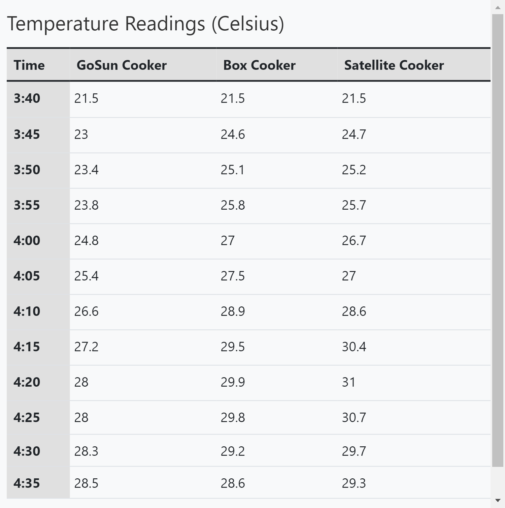

### Week 3
##### _Monday, September 19_
We learned to use SublimeText to update our websites. We did some planning in further experimentation and discussed other, more minor projects related to our main goal. This included using CAD to make the stand for the Fresnel reflector, in which Catherine and Xavier volunteered as tributes to the cause.
##### _Wednesday, September 21_
We conducted a second water-heating experiment with all three cookers. We were still on the ground level, and it was very overcast; as a result, our experiment was a mild failure. We didn’t see any major temperature changes during the entire experiment, and we didn’t get anywhere close to even 50 degrees Celsius like we had previously.

[Head back to the home page](../index.html).